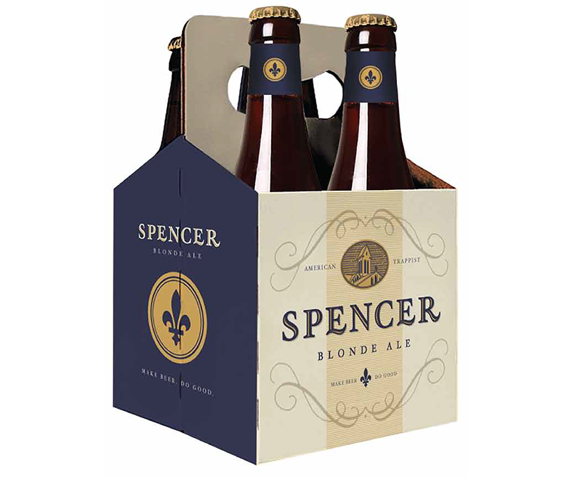

Nick Hiller
Austin, TX
Austin, TX


In late 2012 I began working with the Spencer Brewery to develop their new brand from scratch. The brewery is run by the Trappist monks at St. Joseph's Abbey in Spencer, Massachusetts. The monastery has been in existence for over 200 years, and in 2012 they began construction on a new brewery project, America's first official Trappist brewery.
When I first met with them, they were in the very early stages of their venture: they were building a brewery and were developing a recipe. Beyond that, they had not gone deep into what their brand would be.


A select few pages from the Brand Brief PDF
Over the course of the next 3 months I met with the monks at their monastery in Spencer, learning as much as I could about them and their way of life. Once I felt I had a handle on who they were and what they were hoping to achieve, I got to work writing a brand brief that would act as our guide for the next stages of development.
In writing the brief, I identified brand elements drawn from the abbey itself: the abbey's shield, a font pulled from the abbey's stone altar, their fleur-de-lis, their colors, the abbey bell tower.
I then found examples of other brands that I felt embodied the look and feel that would work well for the Spencer packaging. Simplicity and humility were central, and I found that our look was better defined by wine than most of the craft beer on the market.
With our brief in hand, the next step was to hire a design firm that could bring our vision to life. After interviewing and receiving proposals from designers all over the country, I opted for a local Austin firm, Helms Workshop, as the best fit.
An early packaging design mockup by Helms Workshop. You read their case study of the process to learn more.
Over the course of the next 2 months, we worked with Helms to refine the concept, whittling away until we had a solid foundation from which to base all further brand collateral.
In the end, we arrived at a look that was strikingly close to what we had originally outlined in the brief, the perfect embodiment of what the brewery hoped to accomplish.
Once we had our packaging for the first beer, Spencer Trappist Ale, we next needed to develop line extension options for future beers the brewery hoped to produce.
Next up was the glass. All Trappist breweries serve their beer in a unique chalice. It is crucial to the presentation and enjoyment of a Trappist beer. From a technical standpoint the volume of the glass needed to match the bottle, 11.2 fl. oz. It also needed to serve certain tactile functions such as conveying a preserving the aroma, the feel of the glass in the hand, brand recognition, etc.
After speaking with the brewmaster about the specific concerns he had regarding the glass's performance (his primary concern was the aroma and clarity) I got to work. Once I had the brewery's go ahead with my design, I began reaching out to different glass manufacturers, in the U.S., Germany, and Canada, to see if they felt the glass was something they could deliver. I ultimately went with America's #1 glass manufacturer, Libbey Glass. After working with their technicians in Germany, the end product was the Spencer Chalice.